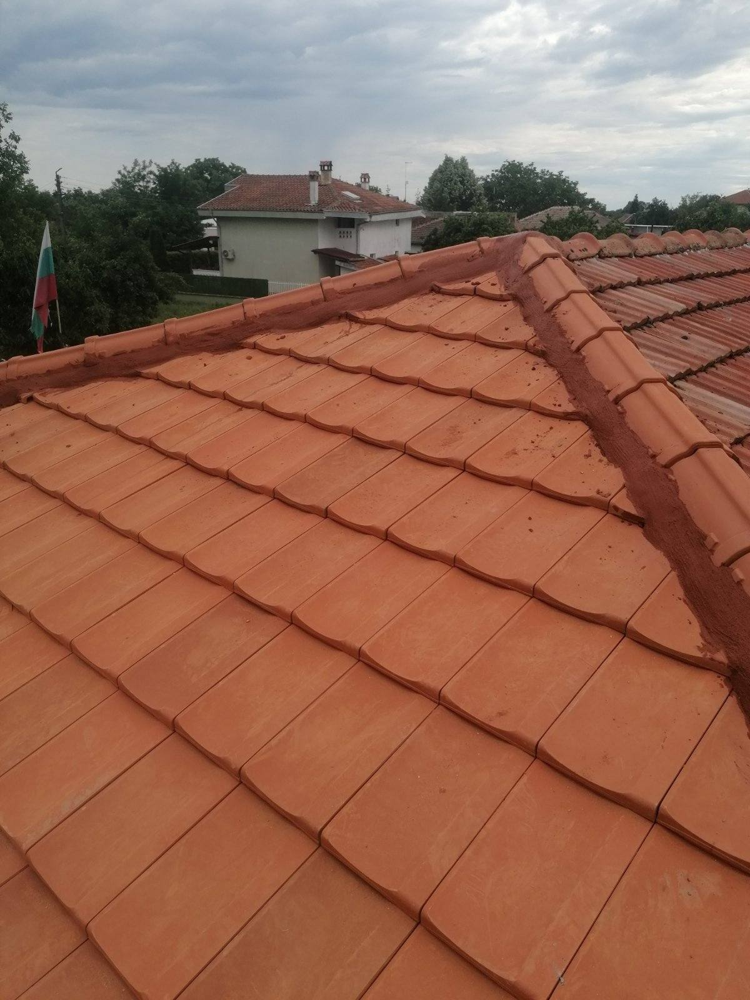
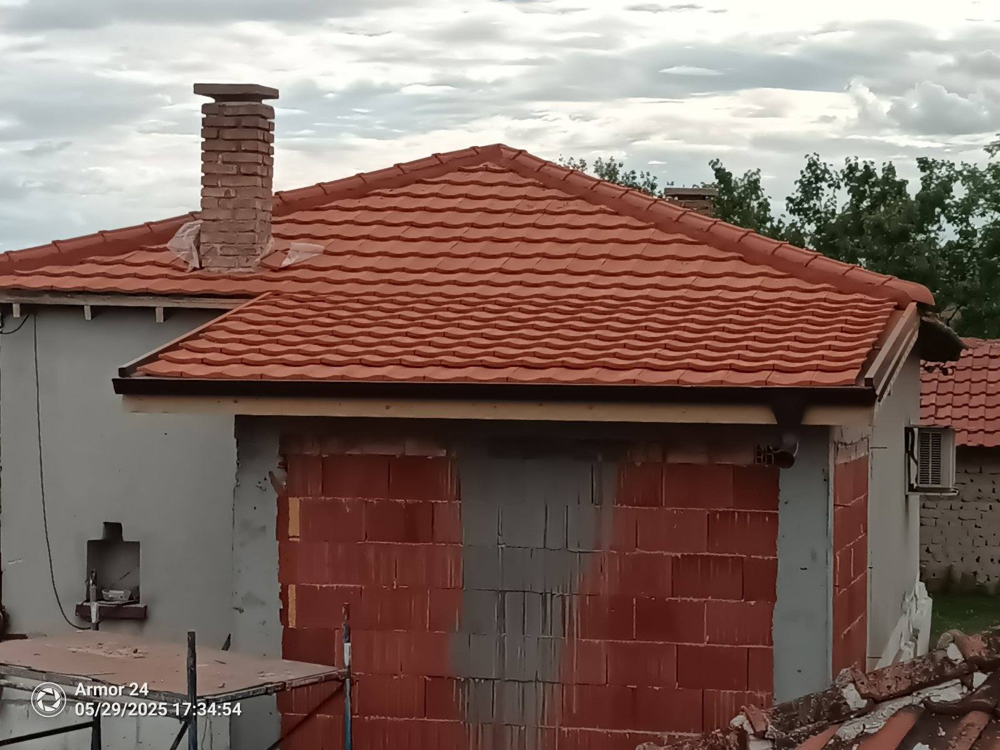

Покриви
Предлагаме изграждане и ремонт на покриви с различни материали - тенекия, керемиди, битум, метал и други. Нашият екип ще осигури надеждна защита на вашия дом или сграда срещу атмосферни влияния и продължителен живот на покривната конструкция.
Видове покриви:
- Класически покриви с греди или керемиди
- Плоски покриви с термозащита
- Зелени покриви и покривни градини
- Фотоелектрични покриви
Услуги за покриви:
- Изграждане на нови покриви
- Ремонт на съществуващи покриви
- Хидроизолация на покриви
- Топлоизолация на покриви
- Ремонт на течове и повреди
Предимства:
- Използване на висококачествени покривни материали
- Професионална диагностика на състоянието на покрива
- Гаранция за изпълнените работи
- Спазване на строителните норми и стандарти
- Енергийна ефективност чрез топлоизолация
- Дълъг живот на покривната конструкция
Работим с водещи производители на покривни материали като Braas, Tondach, Icopal, Sika и др. Всеки проект е уникален и се изпълнява според индивидуалните изисквания на клиента и архитектурното решение на сградата.




Нуждаете се от нов или ремонтиран покрив?
Свържете се с нас за безплатна консултация и персонализирано предложение.
Запитване